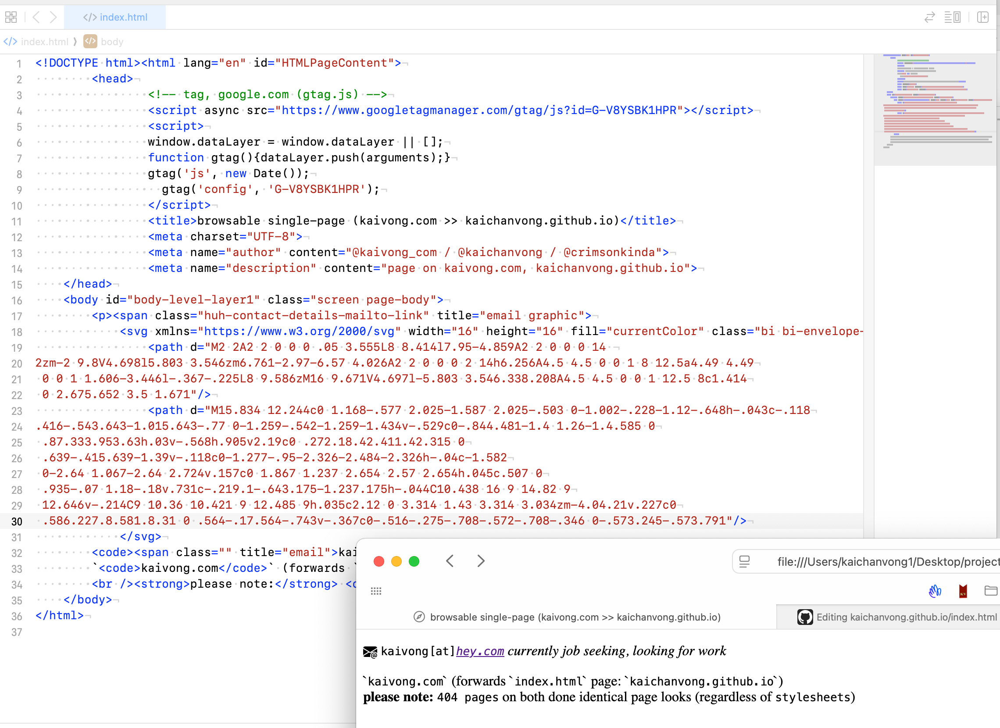

Kai Vong is alumni from tees.ac.uk, previously at JustGiving, artfinder, Dressipi, other teams.
Previously of eSports groups, World Cyber Games admin team
& more (see Linkedin for details).

picture above caption displays: page-source, the SVG @mail icon